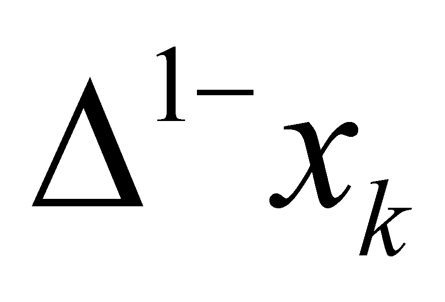
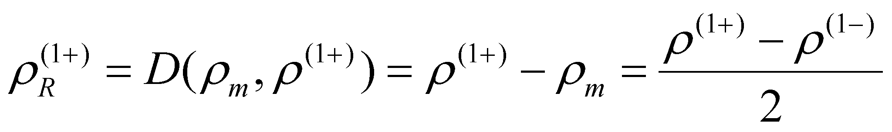

|
|
|
The essence of the objectual (systemic) approach consists in the organization of the processing information into objects and processes by using the notion of distribution. The identification of the objects’ model attributes according to the generic object model presented in chapter 3 is also taken into consideration, and if the processes exist, the identification of the processual objects shall be also undertaken. As for the set of objects which deploy external relations (the case of the complex objects), we also know that these relations are deployed between the internal references of the objects, their internal references being considered as objects’ substitutes within these relations, because quantitative relations can exist only between the singular values.
According to the facts described in chapter 2, the relation y=f(x) which was mentioned at the beginning of section X.3.2.2. represents the distribution of the attribute y on the support attribute x, when the assignment relation is invariant (a function) on the entire support range (the function’s continuity range). In chapter 2, we have also noticed that in case of a singular value considered to be invariant xk, the value of the distributed attribute yk is also invariant, so that the values yk distributed on the values xk are easily recognized as abstract objects belonging to the class S0. A couple which is associated with the point Pk from the plot from the figure X.3.2.3.1, with the position vector rk, is an element from the set of assignment relations which make-up the distribution (that is an element of the primary distribution).
If there are two symmetrical variations of the support attribute ranging from the value up to against the singular value xk (at values which shall be assigned to the points , respectively ), which are small enough so that the deployed distributions to be considered as linear, then, they will be related to the attribute variations:
(X.3.2.3.1)
and:
(X.3.2.3.2)
According to the aspects which were set in chapters 2, 3 and 4, the relation:
(X.3.2.3.3)
identical with the relation X.3.2.2.3,
means the even density of a linear distribution of the
attribute variation
on
a support interval

(that is the density of a P1-type SEP) determined on the
left side of the reference xk. In chapter 4,
we have seen that if the density of a SEP is invariant on its support
range representing an object, in this above-mentioned case, it is an
object belonging to the class S1. This SEP
has the interval
 as its support with an amount
as its support with an amount ,
with the internal reference at xk
(right side reference, which means that the support interval is on
the left of this value. However, the same value xk
may be also an internal reference for the support interval having the
same amount, but which is placed on the right side of the reference
xk,
,
with the internal reference at xk
(right side reference, which means that the support interval is on
the left of this value. However, the same value xk
may be also an internal reference for the support interval having the
same amount, but which is placed on the right side of the reference
xk,
 ,
that is a support interval of another PES with the following density:
,
that is a support interval of another PES with the following density:
(X.3.2.3.4)
Fig. X.3.2.3.1
One may note that according to the objectual approach by means of distributions, the value xk (the same as the one from the above-mentioned classic approach) becomes an internal reference for two interval-type objects (left and right), but they are intervals which represent the support of two even variations with amount and , therefore, xk will be an internal reference both for these processes and for their density values (evenly distributed on the two support intervals with the reference xk).
Comment X.3.2.3.1: The fact that two abstract objects have the same internal reference does not always mean that the two objects are one and the same. The abstract state object S0 with the reference xk is distributed on the nondetermination interval of that DP, whereas the abstract object S1 with the reference at xk is distributed on a finite interval which consists of more known singular values (so that a non-zero process to be able to exist). In both cases, xk is identical, but the amount of the internal domains which are referred to is different. If you read chapters 3 and 4, where the constitutive elements of an object and of a process are mentioned, it is clearly revealed that the objects belonging to classes S0 and S1 cannot be mixed-up even if they have the same internal reference. There was a clear specification in chapter 4 that the objects S0 are states of some objects (with null processes) and the objects S1 are states related to specific even processes P1).
The total variation density (which is
also considered as even) on the support interval
 (by
subtracting and adding f(xk) to the
numerator), results to be:
(by
subtracting and adding f(xk) to the
numerator), results to be:
(X.3.2.3.5)
hence, it may be observed that this density is equal to the mean value of the two left-right densities with the reference point in xk. In relation to this mean density (which is equal to the tangent density in Pk), considered as a common component of the two density values (internal class reference), we shall have the two specific components of the densities (given by the function D(), mentioned in chapter 3):
(X.3.2.3.6)
the specific component of the density on the left side of the reference xk and:
 (X.3.2.3.7)
the specific component of the density on the right side of the same reference. When we discussed in chapter 4 about the two concatenated SEP (such as the variations in question), we noticed that in case of a non-linear dependence relation such as f(x), the two specific components of SEP must exist (to be different from zero), otherwise, the relation f(x) is a straight-line (tangent case).
As a result of this objectual analysis on the objects and processes involved in the definition of the first-rank derivative, the following aspects may be underlined:
The abstract object that is “the singular value of a dependent variable yk assigned by means of a relation f to a single independent invariant xk” represents an object from the processual class S0 (class which is specific to the objects unfolding null processes).
The abstract object “first
rank finite variation
 of the attribute y evenly distributed on a support finite variation
of the same rank
”
(where xk is the internal
reference of the support interval), represents a SEP belonging to
class P1 (a finite difference between two
states S0); the even density of this SEP is
a process state belonging to class S1.
of the attribute y evenly distributed on a support finite variation
of the same rank
”
(where xk is the internal
reference of the support interval), represents a SEP belonging to
class P1 (a finite difference between two
states S0); the even density of this SEP is
a process state belonging to class S1.
Two variations
 ,
with support intervals equal in terms of the amount
,
with support intervals equal in terms of the amount
 ,
symmetrically arranged against a common reference xk,
shall represent two concatenated SEP where the final state of the
first one is an initial state of the second one, this common state
(S0 type) being the point
as
it is shown in the example given in the figure X.3.2.3.1. Each of
these SEP can have however small support domains, but provided that
the support to comprise more than one known singular value (in order
to exist a linear variation
,
symmetrically arranged against a common reference xk,
shall represent two concatenated SEP where the final state of the
first one is an initial state of the second one, this common state
(S0 type) being the point
as
it is shown in the example given in the figure X.3.2.3.1. Each of
these SEP can have however small support domains, but provided that
the support to comprise more than one known singular value (in order
to exist a linear variation
 ),
so that they can never converge to a point, even it is a dimensional
point.
),
so that they can never converge to a point, even it is a dimensional
point.
By considering this
latter amendment, we may keep the notation used for the infinitesimal
ranges from the differential calculus, the variations
 and
and
 becoming
dy and dx, which could have as an internal reference a
singular value, but they could never be replaced by a singular
value (a single point). In such conditions, the relations
X.3.2.2.3 and X.3.2.2.4 remain valid in case of the
distributions-based mathematics, but the first rank derivative is no
longer the limit (asymptote) towards which the variations ratio tends
to, but it is the density of a first rank SEP. Another
relevant specification, that is the domain dx in case of the
realizable processes (of the numerical calculations) cannot be less
than
becoming
dy and dx, which could have as an internal reference a
singular value, but they could never be replaced by a singular
value (a single point). In such conditions, the relations
X.3.2.2.3 and X.3.2.2.4 remain valid in case of the
distributions-based mathematics, but the first rank derivative is no
longer the limit (asymptote) towards which the variations ratio tends
to, but it is the density of a first rank SEP. Another
relevant specification, that is the domain dx in case of the
realizable processes (of the numerical calculations) cannot be less
than ,
the error interval used for representing the concrete numerical
values on the effector IPS. As for the concatenated SEP where the
support interval
,
the error interval used for representing the concrete numerical
values on the effector IPS. As for the concatenated SEP where the
support interval
 cannot
be neglected (neglection imposed by the current formula of obtaining
the functions derivatives, which are valid for
),
thus, only the calculus with finite differences can be used for
computing the distributions’ density values.
cannot
be neglected (neglection imposed by the current formula of obtaining
the functions derivatives, which are valid for
),
thus, only the calculus with finite differences can be used for
computing the distributions’ density values.
Copyright © 2006-2011 Aurel Rusu. All rights reserved.